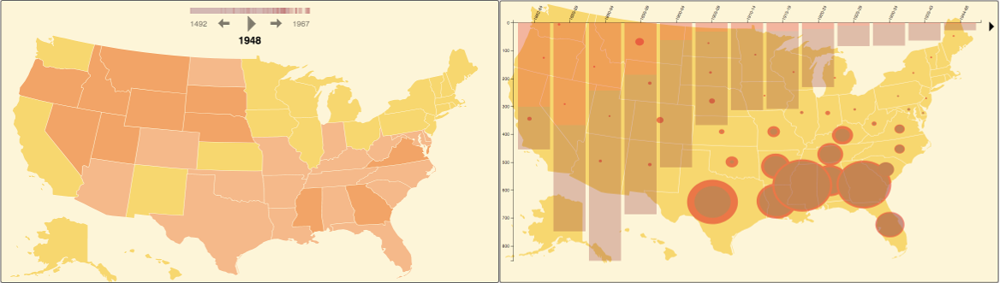
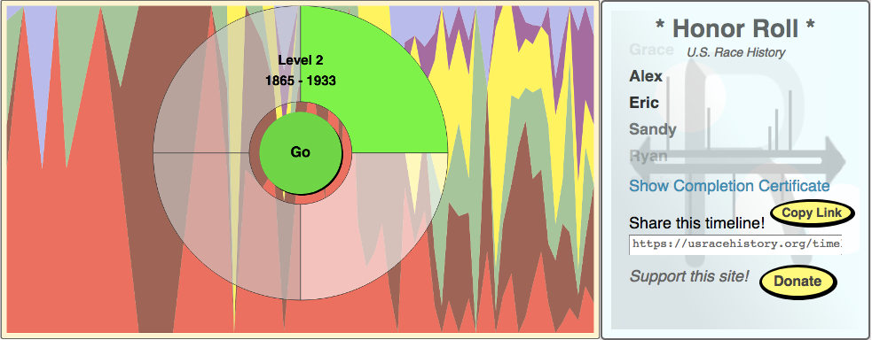
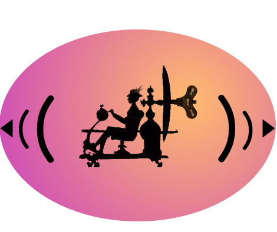

PastKey is a platform for creating historical timelines. Each timeline point shows concise text with an optional picture and links to resources.
Timelines may be viewed interactively or as a searchable reference archive.
Supplemental visualizations based on specialized datasets can be added to any timeline to create multiple levels. Longer timelines are automatically divided into chapters.
PastKey is an open source project. Points for timelines and visualizations are provided by member organizations. You can build your own timelines, download data in a variety of formats, and embed timelines in other websites.
Here are some timelines you can try:
